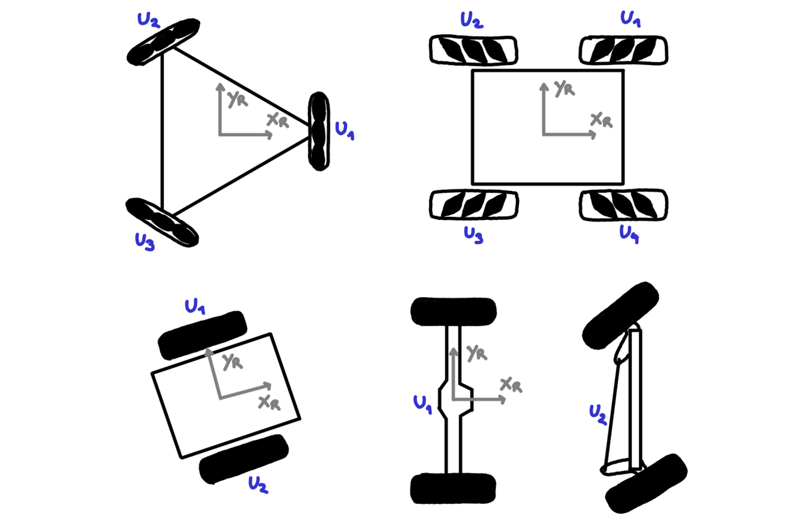
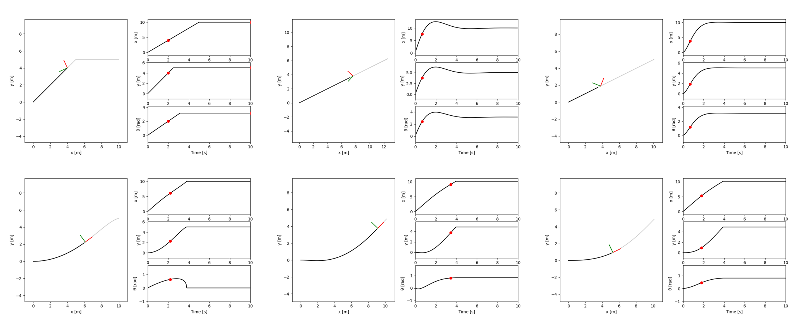
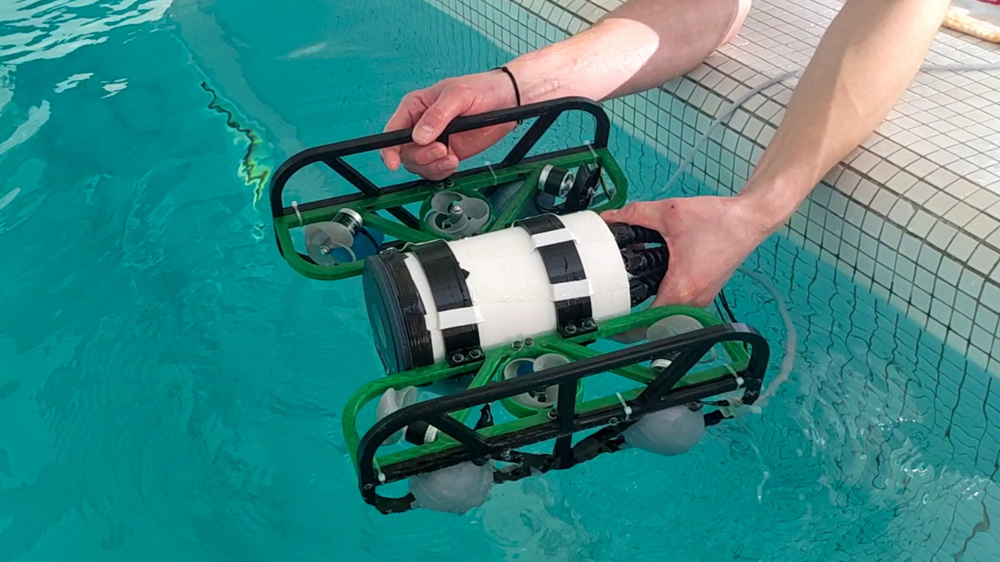
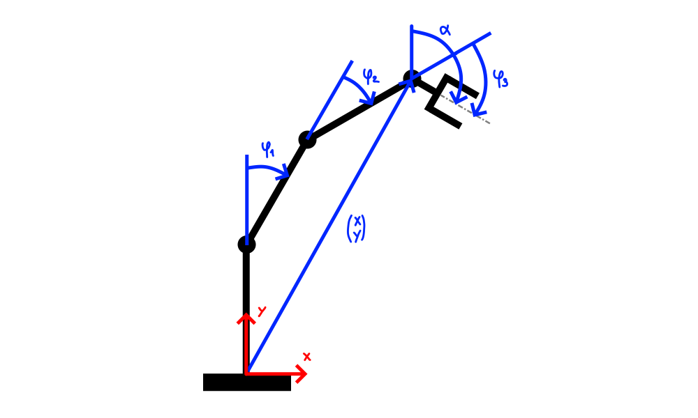
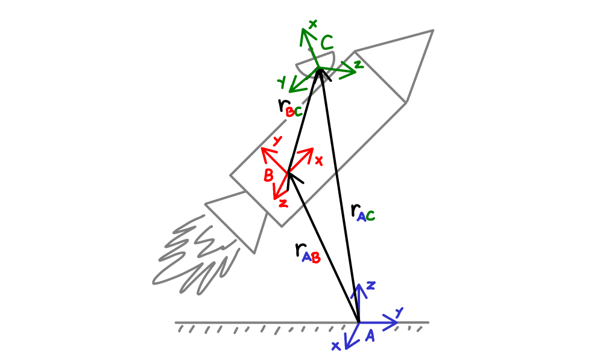
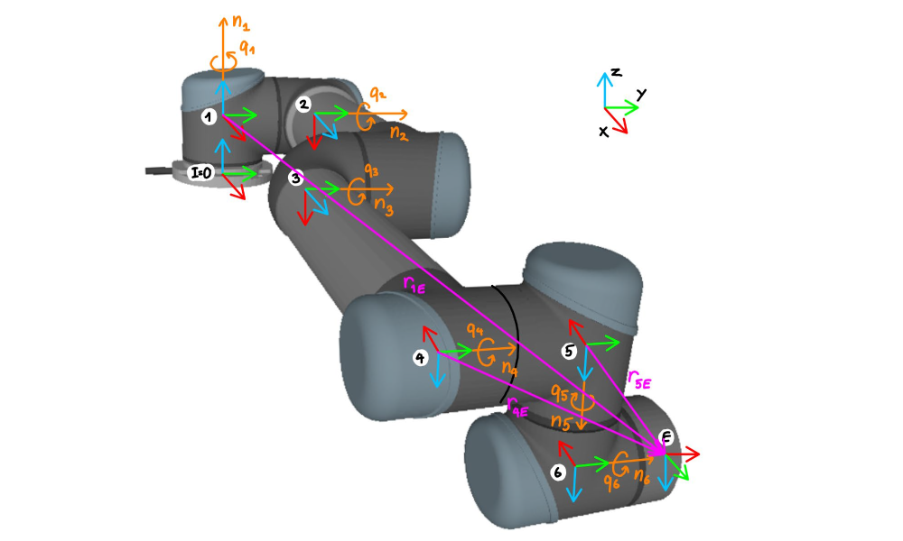
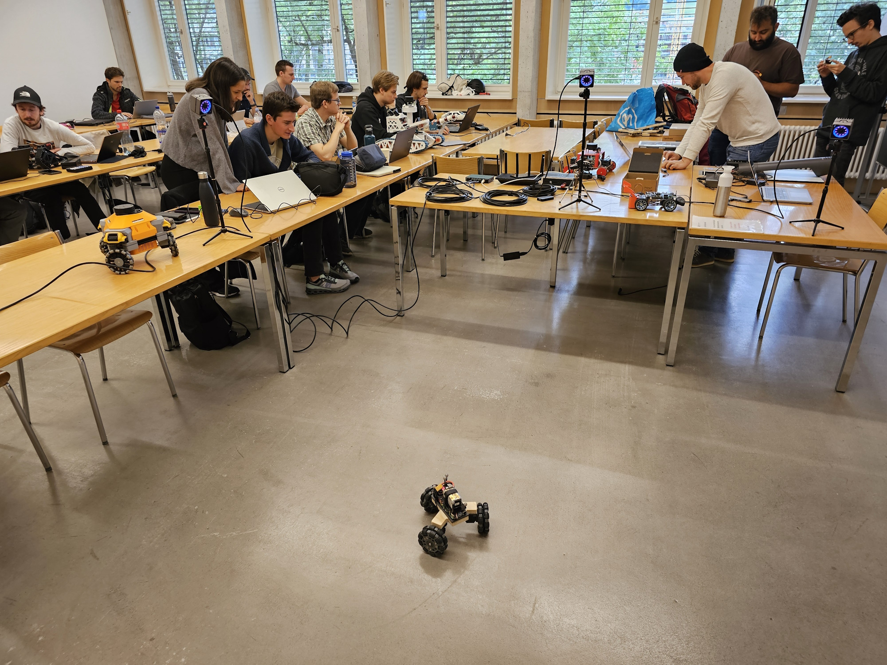
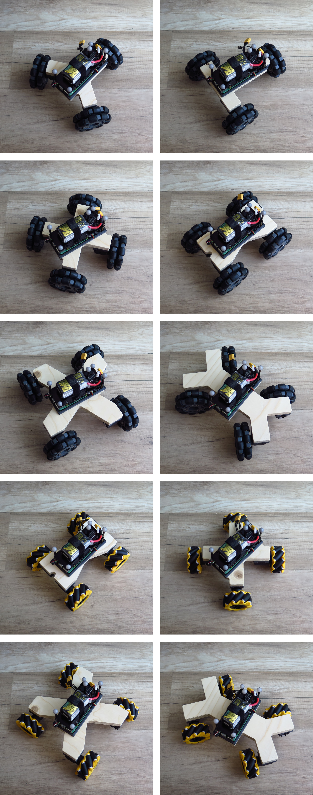
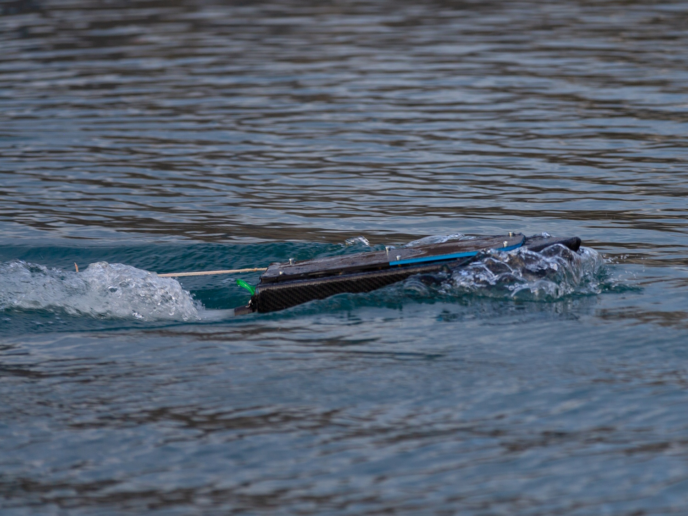

In a lucky coincidence and on short notice I managed to get a position as Lecturer at the University of Applied Sciences of the Grison (FHGR) in my hometown of Chur, Switzerland. This happened right after i saw myself forced to resign from my PhD position at the University of Groningen, Netherlands.
The very first course i ever gave was an elective course on "Land- and Water-based Robotics" for a bachelor's degree in "Mobile Robotics". It was a verry challenging one, as it was the very first time it would be held and there was no preexisting material to draw from. Thanks to the advice and trust of my colleagues and thanks to a pretty great group of students, everything went pretty smoothly!
The course was structured in two parts. One half were lectures on land-based robotics, while the other half were group projects on water-based robotics. In land-based robotics we looked at ways of modelling various wheeled robots, spanning robots with arbitrary omni-wheel configurations, mecanum wheels, differential-drive steering, and Ackerman steering. Once we had the models, we implemented various controllers to steer the robots to their destination (regrettably only in a python simulation environment). These controllers included simple bang-bang control, PID with a few variations, linear regulators, and L1/L0 controllers. After talking for a few weeks about wheeled robots, i tried my hand at introducing the basics of legged robots, the other big category of land-based robots. This part went a bit less smoothly, as it was far more difficult to explain the topic clearly and concisely.
 The second part of the course was on water-based robotics, with which I admitteldly had little experience with. So, with a lot of autonomy, the class got to built three small water robots! The only important conditions were to build three distinct robots, and to share the learnings with the other groups in a final presentation. This resulted in the "Ravioli" fully-actuated submarine, the "SonarBoat" capable of scanning the ground of deep lakes, and the "ABEM" implementing a prototype solar sailing ship with a vast array of sensors onboard.
I inherited this course from a part-time lecturer who left to work full-time in industry. Although, I did end up modify his material quite a bit to better match how I myself would have liked to be taught. The course covers the various intricacies of how industrial robots manage to move where they're supposed to go. My final goal was to get everyone to write a python program, without any libraries except NumPy, that could move the tool of a 6 axis industrial robot from an arbitrary position/orientation to any other position/orientation. A very difficult problem, that covers a lot of interesting subproblems with many useful applications.
After getting a rough overview, we started by manually solving this problem for a simple 3 axis 2D industrial robot. While this is rather easy, it offers a good reference to better understand the sometimes-confusing steps needed to solve the 6 axis 3D case. Namely, we looked at the forward/inverse kinematics and differential kinematics, as well as ways to deal with their edge cases.
Next we needed to get some tools to be able to tackle the 6 axis robot. This part was the most tricky for me, because it's difficult to convince people of the usefulness of a tool while they try to understand how it works. So, we looked at various ways to describe coordinates, orientations, velocities and rotational velocities, as well as every way to convert between them. Homogeneous coordinates were the last piece in the toolbox we needed to proceed.
Then the big coding challenge started. I provided a visualization of the 6 axis robot in python, and people implemented the algorithms needed to move the robot to its target position/orientation, similarly to how they already did for the 3 axis robot. At every intermediate step, the visualization could then be used as validation. Although, that aspect could still use some polish from my side.
Finally, we landed on a program that could move this 6 axis industrial robot from anywhere to anywhere else. We could also use this program to look into how things go wrong when edge cases are encountered.
The feedback I got was overall very positive :) Although it is true that I sometimes made largeish jumps in logic or forgot to reference my common thread. But luckily I was made aware of those instances in time, so everything worked out fine! Here below is a sample lecture about position/orientation descriptions, using my MOMAV drone as an example application and as the topic of the following exercise. The language i speak there is Swiss German by the way.
The second iteration of land- and water-based robotics was largely similar to the first iteration in structure. The scope of the "land" part was slightly reduced, dropping legged robots, and instead more time was spent better understanding wheeled robots. This time I prepared my new mocap system, so that it could provide ground-truth position data to real wheeled robots (over WiFi with a python library or serial with a ESP8266 WiFi module). The goal was to run the python scripts from the programming exercises on actual robots that the students built previously in the "mobile robotics 1 & 2" projects. Additionally, I built my own modular wheeled robot with changeable wheel geometries and wheel types (omni/mechanum). It turned out that integrating the controllers into existing robots was quite challenging and only 2/5 groups managed to do so successfully, before we had to move on to the "water" part. Still, I'm convinced that everyone learned a lot during those weeks, and that given more time (and possibly more of my modular robots) the format could work very well.
 The "water" part was also organized like the previous year, where everyone could pick a water-related robot and try to implement it. This resulted in: "Ship Happens", a waterjet speedboat with carbon hull, "Flipper", a submarine meant to jump over fish stairs, "Boatus Maximus", a propeller driven boat with a rotating head, and "Omni Boot", an omnidirectional boat meant for very precise positioning.
The lecture was tweaked to make the link between the 2D and 3D cases more apparent, the notation was changed to make it a bit less confusing (using XYZ for both cartesian coordinates and roll-pitch-yaw angles is not a smart decision), and a few mistakes in my notes were fixed. Otherwise, everything remained unchanged and the lectures went smoothly!